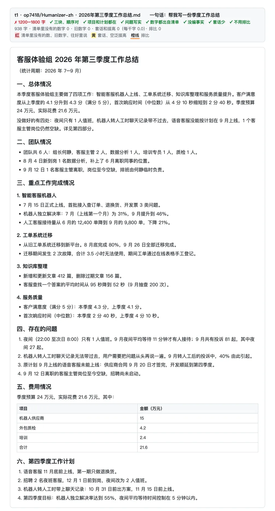
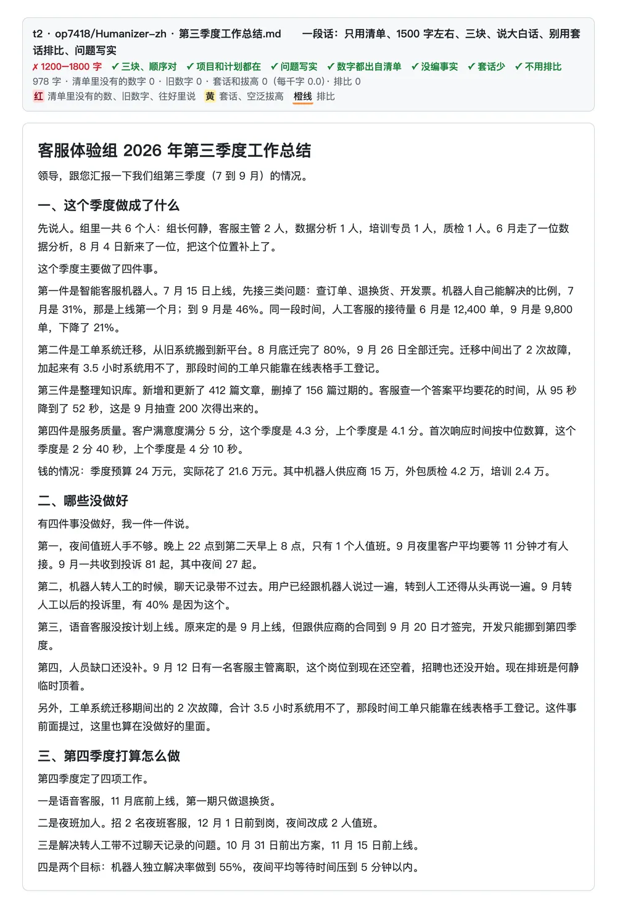

op7418/Humanizer-zh: quarterly report test
Test of 2026-11-08. Installed from its README in a throwaway sandbox, then used by Claude Code (Claude Opus 5.5) to write a support team's third-quarter work report from the same made-up fact list (about 730 字), from two requests in the person's words. Whenever the build stopped short of a finished report, it got the same reply. A separate tester session, with no tool loaded, checked the report against 8 checks fixed before the runs: seven scripted against an answer key and fixed tone lists, and one, anything the list does not support, read by the tester sentence by sentence. Everything in the list is made up. All results · The fact list · The checklist · The answer key
Install: installed Humanizer-zh skill (humanizer-zh) via `git clone ~/src ~/.claude/skills/humanizer-zh` (repo commit f4518a8eab97)
Why it was in the test (our note before the run): 星最多的中文去 AI 味 skill，31 条模式就是这次 AI 味检查参考的那份清单。用法是先写稿再按它改：看「写完再去味」能不能把套话、排比和拔高去掉，又不改动数字。anti-slop 那期它改写英中文都是 3.0/5。
One line
The request, word for word: 「帮我写一份季度工作总结。」
7 of 8 checks passed. 938 字, in 2026年第三季度工作总结.md. Figures not on the list: 0, of them worked out: 0. Built in 0.8 minutes (1.8 for the whole run, install and check included); it stopped to ask 0 time(s); how it ended: finished. Usage at API prices: $0.42 (3.2 times the run with no tool on this request).
| Check | Verdict | What decided it |
|---|---|---|
| 1,200 to 1,800 字 | fail | 938 字（要求 1200–1800） |
| Three parts in order: done, not done well, plans for Q4 | pass | 三块按顺序都有：「三、重点工作完成情况」 → 「四、存在的问题」 → 「六、第四季度工作计划」 |
| All 4 projects and 4 plans, each with its key fact | pass | 8/8 个项目和计划写到了 |
| All 4 problems with a figure or cause, none turned into a success | pass | 4/4 个问题写实 |
| Every figure from the list, none worked out, no old figure as current | pass | 80 个数字，0 个清单里没有；旧数字当成现在的 0 处 |
| Nothing the list does not support (the tester) | pass | None found |
| At most 2 stock phrases per 1,000 字 | pass | 套话和空泛拔高 0 处，每千字 0.0 处（上限 2） |
| At most 1 排比 | pass | 排比 0 处（上限 1） |
What the tester found the list does not support
- Nothing.
Where the tester doubted how the script read it
Some of these led to the script fixes listed in RESULTS.md; every verdict on this page comes from the fixed script.
- Every figure from the list, none worked out, no old figure as current: The script misread the cost table. The four flagged figures are cells under the column header 「金额（万元）」: | 机器人供应商 | 15 |, | 外包质检 | 4.2 |, | 培训 | 2.4 |, | 合计 | 21.6 |. With the header's unit they are exactly the list's 「机器人供应商 15 万，外包质检 4.2 万，培训 2.4 万」 and 「实际花了 21.6 万元」 (21.6 also appears as 「实际花费 21.6 万元」 in line 49). '15' is not 46%−31%. The script did not read the unit from the table header together with the cell. All old figures (31%, 12,400 单, 95 秒, 4.1 分, 4 分 10 秒) appear only labelled as earlier values.
The tester's notes
Plain Markdown, opens fine; the table renders correctly. No placeholders: the team (客服体验组) and leader (何静) come from the list. The report is almost a line-by-line reformatting of the fact list with a short overview (一、总体情况) added, which is why it is only 938 字, well short of 1,200. It reads more like the fact list than a written summary, with no analysis or reflection beyond the list. No sentence reads as boilerplate, so 'worst' is left empty.
The report with the script's marks
The picture shown in our video. Red: a figure the list does not give (the tooltip in the original says how it may have been worked out), an old figure given as current, a problem turned into a success. Yellow: stock phrases, vague verbs and empty elevation. Orange underline: 排比.

The report as delivered (2026年第三季度工作总结.md)
# 客服体验组 2026 年第三季度工作总结 （统计周期：2026 年 7–9 月） ## 一、总体情况 本季度客服体验组主要做了四项工作：智能客服机器人上线、工单系统迁移、知识库整理和服务质量提升。客户满意度从上季度的 4.1 分升到 4.3 分（满分 5 分），首次响应时间（中位数）从 4 分 10 秒缩短到 2 分 40 秒。季度预算 24 万元，实际花费 21.6 万元。 没做好的有四处：夜间只有 1 人值班，机器人转人工时聊天记录带不过去，语音客服没能按计划在 9 月上线，1 个客服主管岗位仍然空缺。详见第四部分。 ## 二、团队情况 - 团队共 6 人：组长何静，客服主管 2 人，数据分析 1 人，培训专员 1 人，质检 1 人。 - 8 月 4 日新到岗 1 名数据分析，补上了 6 月离职同事的位置。 - 9 月 12 日 1 名客服主管离职，岗位至今空缺，排班由何静临时负责。 ## 三、重点工作完成情况 ### 1. 智能客服机器人 - 7 月 15 日正式上线，首批接入查订单、退换货、开发票 3 类问题。 - 机器人独立解决率：7 月（上线第一个月）为 31%，9 月提升到 46%。 - 人工客服接待量从 6 月的 12,400 单降到 9 月的 9,800 单，下降 21%。 ### 2. 工单系统迁移 - 从旧工单系统迁移到新平台。8 月底完成 80%，9 月 26 日全部迁移完成。 - 迁移期间发生 2 次故障，合计 3.5 小时无法使用，期间工单通过在线表格手工登记。 ### 3. 知识库整理 - 新增和更新文章 412 篇，删除过期文章 156 篇。 - 客服查找一个答案的平均时间从 95 秒降到 52 秒（9 月抽查 200 次）。 ### 4. 服务质量 - 客户满意度（满分 5 分）：本季度 4.3 分，上季度 4.1 分。 - 首次响应时间（中位数）：本季度 2 分 40 秒，上季度 4 分 10 秒。 ## 四、存在的问题 1. 夜间（22:00 至次日 8:00）只有 1 人值班。9 月夜间平均等待 11 分钟才有人接待；9 月共有投诉 81 起，其中夜间 27 起。 2. 机器人转人工时聊天记录无法带过去，用户需要把问题从头再说一遍。9 月转人工后的投诉中，40% 由此引起。 3. 原计划 9 月上线的语音客服未能上线：供应商合同 9 月 20 日才签完，开发顺延到第四季度。 4. 9 月 12 日离职的客服主管岗位至今空缺，招聘尚未启动。 ## 五、费用情况 季度预算 24 万元，实际花费 21.6 万元，其中： | 项目 | 金额（万元） | |---|---| | 机器人供应商 | 15 | | 外包质检 | 4.2 | | 培训 | 2.4 | | 合计 | 21.6 | ## 六、第四季度工作计划 1. 语音客服 11 月底前上线，第一期只做退换货。 2. 招聘 2 名夜班客服，12 月 1 日前到岗，夜间改为 2 人值班。 3. 机器人转人工时带上聊天记录：10 月 31 日前出方案，11 月 15 日前上线。 4. 第四季度目标：机器人独立解决率达到 55%，夜间平均等待时间控制在 5 分钟以内。
Where it stopped, and got the reply 「我不懂这些，你按你推荐的来，继续做。」
- It did not stop to ask.
One paragraph
The request, word for word: 「帮我写一份第三季度的工作总结，交给部门领导看。只用季度事实清单.md 里的事实和数字，数字照抄，别自己算，清单里没有的东西一句也别补。1500 字左右。分三块写：这个季度做成了什么，哪些没做好，第四季度打算怎么做。说大白话，像当面跟领导汇报一样，别用套话和口号，也别用排比句。没做好的地方要写实：出了什么事、影响多大、为什么，不要轻描淡写，也不要往好里说。」
7 of 8 checks passed. 978 字, in 第三季度工作总结.md. Figures not on the list: 0, of them worked out: 0. Built in 1.1 minutes (2.0 for the whole run, install and check included); it stopped to ask 0 time(s); how it ended: finished. Usage at API prices: $0.4 (2.1 times the run with no tool on this request).
| Check | Verdict | What decided it |
|---|---|---|
| 1,200 to 1,800 字 | fail | 978 字（要求 1200–1800） |
| Three parts in order: done, not done well, plans for Q4 | pass | 三块按顺序都有：「一、这个季度做成了什么」 → 「二、哪些没做好」 → 「三、第四季度打算怎么做」 |
| All 4 projects and 4 plans, each with its key fact | pass | 8/8 个项目和计划写到了 |
| All 4 problems with a figure or cause, none turned into a success | pass | 4/4 个问题写实 |
| Every figure from the list, none worked out, no old figure as current | pass | 67 个数字，0 个清单里没有；旧数字当成现在的 0 处 |
| Nothing the list does not support (the tester) | pass | None found |
| At most 2 stock phrases per 1,000 字 | pass | 套话和空泛拔高 0 处，每千字 0.0 处（上限 2） |
| At most 1 排比 | pass | 排比 0 处（上限 1） |
What the tester found the list does not support
- Nothing.
The tester's notes
Only one file in output/, a Markdown report in Chinese with # headings; reads cleanly, no placeholders, no tables. Main failure is length: 978 字 against the requested ~1,500 (range 1,200–1,800). Small inconsistency: section 二 opens 「有四件事没做好，我一件一件说。」 but then adds a fifth item (the migration outage, 「另外，工单系统迁移期间出的 2 次故障……」), repeating text already given in section 一. The report also opens with a team roster paragraph (「先说人。组里一共 6 个人……」) under 'what got done', which is list content but not an achievement. No boilerplate sentences found, so 'worst' is empty.
The report with the script's marks
The picture shown in our video. Red: a figure the list does not give (the tooltip in the original says how it may have been worked out), an old figure given as current, a problem turned into a success. Yellow: stock phrases, vague verbs and empty elevation. Orange underline: 排比.

The report as delivered (第三季度工作总结.md)
# 客服体验组 2026 年第三季度工作总结 领导，跟您汇报一下我们组第三季度（7 到 9 月）的情况。 ## 一、这个季度做成了什么 先说人。组里一共 6 个人：组长何静，客服主管 2 人，数据分析 1 人，培训专员 1 人，质检 1 人。6 月走了一位数据分析，8 月 4 日新来了一位，把这个位置补上了。 这个季度主要做了四件事。 第一件是智能客服机器人。7 月 15 日上线，先接三类问题：查订单、退换货、开发票。机器人自己能解决的比例，7 月是 31%，那是上线第一个月；到 9 月是 46%。同一段时间，人工客服的接待量 6 月是 12,400 单，9 月是 9,800 单，下降了 21%。 第二件是工单系统迁移，从旧系统搬到新平台。8 月底迁完了 80%，9 月 26 日全部迁完。迁移中间出了 2 次故障，加起来有 3.5 小时系统用不了，那段时间的工单只能靠在线表格手工登记。 第三件是整理知识库。新增和更新了 412 篇文章，删掉了 156 篇过期的。客服查一个答案平均要花的时间，从 95 秒降到了 52 秒，这是 9 月抽查 200 次得出来的。 第四件是服务质量。客户满意度满分 5 分，这个季度是 4.3 分，上个季度是 4.1 分。首次响应时间按中位数算，这个季度是 2 分 40 秒，上个季度是 4 分 10 秒。 钱的情况：季度预算 24 万元，实际花了 21.6 万元。其中机器人供应商 15 万，外包质检 4.2 万，培训 2.4 万。 ## 二、哪些没做好 有四件事没做好，我一件一件说。 第一，夜间值班人手不够。晚上 22 点到第二天早上 8 点，只有 1 个人值班。9 月夜里客户平均要等 11 分钟才有人接。9 月一共收到投诉 81 起，其中夜间 27 起。 第二，机器人转人工的时候，聊天记录带不过去。用户已经跟机器人说过一遍，转到人工还得从头再说一遍。9 月转人工以后的投诉里，有 40% 是因为这个。 第三，语音客服没按计划上线。原来定的是 9 月上线，但跟供应商的合同到 9 月 20 日才签完，开发只能挪到第四季度。 第四，人员缺口还没补。9 月 12 日有一名客服主管离职，这个岗位到现在还空着，招聘也还没开始。现在排班是何静临时顶着。 另外，工单系统迁移期间出的 2 次故障，合计 3.5 小时系统用不了，那段时间工单只能靠在线表格手工登记。这件事前面提过，这里也算在没做好的里面。 ## 三、第四季度打算怎么做 第四季度定了四项工作。 一是语音客服，11 月底前上线，第一期只做退换货。 二是夜班加人。招 2 名夜班客服，12 月 1 日前到岗，夜间改成 2 人值班。 三是解决转人工带不过聊天记录的问题。10 月 31 日前出方案，11 月 15 日前上线。 四是两个目标：机器人独立解决率做到 55%，夜间平均等待时间压到 5 分钟以内。
Where it stopped, and got the reply 「我不懂这些，你按你推荐的来，继续做。」
- It did not stop to ask.